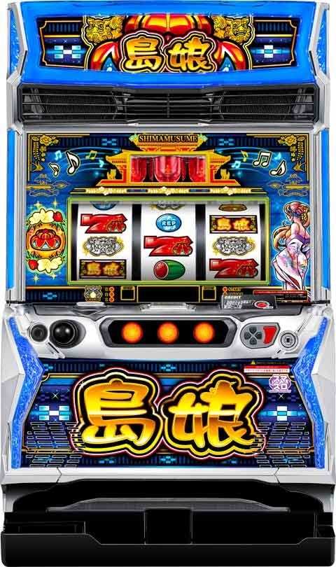

L島娘


狙い目
【リセット狙い】
220Gからボーナス当選まで
【スルー別ボーナス間天井狙い】
※スルーとはREGが連続している状態。BIGを引いたらリセットされます。
0スルー 240G
1スルー 320G
2スルー 320G
3スルー 300G（当選後BB非当選時は4スルーも消化）
4スルー 0G
5スルー 50G or 100G
6スルー以降について、
9スルー(10回目)の倍数とその次(11回目)が強い傾向。
【チャンスモード後狙い】
前回150G.151G当選後はチャンスモードだった可能性アップ。
次回が高確モードの可能性上がるため0Gから打てそう。
【スルー天井狙い】
12スルーから
【有利区間切れ狙い】
不明
やめ時
連チャン時は32G以内の引き戻しモード確認してやめ
非連チャン時はときめきゾーン抜けたらやめ
その他
【狙い目について】
・高確モードが見込める状況
内部モードが高確だと0Gからで期待値2000円越え？機械割110%超え？
①5の倍数回
4スルー(5回目)、9スルー(10回目)は高確モード確定のため0から打てる。
②チャンスモード後
チャンスモード後は高確モード確定。
直近の当選履歴が150G(151Gも？)当選だとチャンスモード天井当選の可能性アップ。
このパターンでも0Gから打てそう。
③1スルー(2回目)150G当選の台
1スルー(2回目)時150G当選の場合は2スルー(3回目)以降は高確かチャンスモード可能性アップ。
恐らく4スルー(5回目)まで0Gから打てる。
④2スルー(3回目)150G当選の台
シナリオ4の可能性アップ。
恐らく4スルー(5回目)まで0Gから打てる。

示唆


参考元
基本情報
- メーカー: オリンピア
- 機械割: 97.9% 〜 112.0%
- 導入開始日: 2025年01月20日（月）
- ゲーム性概要: ●初当りは基本的にREG、連チャン中は基本的にBIGに当選 ●REG後の（超）ときめきゾーンでボーナスを引けば連チャンがスタート ●BIG連モードの平均継続率は約82% ●花笠モードの平均継続率は約91%


打ち方
打ち方・小役
打ち方（小役狙い）
［最初に狙う絵柄］

左リール上段付近に黒BARを目押し。上段にスイカがスベってきた時以外は中＆右リールフリー打ちでOKだ。
［スイカ停止時は右リールを目押し］

中リールは取りこぼしがないのでフリー打ち、右リールは赤7付近を避けてスイカを目押ししよう。
［レア役の停止形］

解析情報通常時
小役関連
小役確率
| 役 | 確率 |
|---|---|
| スイカ | 1/128.0 |
| チェリー | 1/40.3 |
| チャンスチェリー | 1/1024.0 |
※レア役合算は1/29.8
小役確率は全設定共通だ。
小役契機のボーナス当選率
チャンスチェリーはモード不問で期待度約50%、チェリー契機は若干ではあるが高設定ほど優遇、スイカ契機は滞在モードで期待度が変化する。
［チャンスチェリー］ボーナス当選率
| 設定 | 当選率 |
|---|---|
| 全設定共通 | 50.0% |
［スイカ］ボーナス当選率
| 滞在モード | 当選率 |
|---|---|
| 通常モード | 6.3% |
| チャンスモード | 20.3% |
| 高確モード | 20.3% |
| BIG準備モード | 6.3% |
| 連チャン引き戻しモード | 20.3% |
モード
通常時モード概要
通常時モードは10種類のシナリオで管理されていて、REG当選ごとに移行するモード（5回目まで）が決まっている。ボーナス連チャンに期待できる BIG連モードは通常時モードを参照してREG当選時に移行が抽選 される。 1つのシナリオが終了するとシナリオが再抽選されるとともにBIG準備モード移行を抽選。シナリオが再抽選されるほどBIG準備モードへ移行しやすく、最大4周目（REG15回終了後）に必ずBIG準備モードに移行した後、16回目の初当りがBIG濃厚（BIG連モードへ移行）となる。
通常時モードの特徴
| モード | 特徴 |
|---|---|
| 通常 | ● 最大天井は500G ● 350Gの選択率が比較的高い |
| チャンス | ● 次回は高確モード濃厚 ● 最大天井は150G |
| 高確 | ● 約33%でBIG連モードへ移行 ● 全モードで最も滞在比率が高い（全体の約50%） ● 最大天井は500G |
| BIG準備 | ● BIG当選濃厚（BIG連モード移行） ● 最大天井は500G |
高確滞在時の機械割は設定1でも110%以上だ！
通常時モードごとの規定ゲーム数分布
| モード | 150G | 350G | 500G |
|---|---|---|---|
| 通常 | － | ◎ | 天井 |
| チャンス | 天井 | － | － |
| 高確 | △ | ◯ | 天井 |
| BIG準備 | △ | ◎ | 天井 |
通常時モードのシナリオ
| シナリオ | 1回目 | 2回目 | 3回目 | 4回目 | 5回目 |
|---|---|---|---|---|---|
| 1 | 通常 | 通常 | 高確 | 通常 | 高確 |
| 2 | 通常 | チャンス | 高確 | チャンス | 高確 |
| 3 | 通常 | 高確 | 通常 | 通常 | 高確 |
| 4 | 通常 | 高確 | チャンス | 高確 | 高確 |
| 5 | チャンス | 高確 | 通常 | チャンス | 高確 |
| 6 | チャンス | 高確 | 通常 | 高確 | 高確 |
| 7 | チャンス | 高確 | 高確 | 高確 | 高確 |
| 8 | 高確 | 通常 | 高確 | 通常 | 高確 |
| 9 | 高確 | チャンス | 高確 | 高確 | 高確 |
| 10 | 高確 | 高確 | 高確 | 高確 | 高確 |
シナリオ4以上が選択されている時の機械割は、設定1でも100%以上になる。
通常時モードごとのボーナス確率（トータル）
| 設定 | 通常 | チャンス | 高確 | BIG準備 |
|---|---|---|---|---|
| 1 | 1/224.6 | 1/74.9 | 1/218.3 | 1/221.3 |
| 2 | 1/221.0 | 1/74.5 | 1/212.6 | 1/217.0 |
| 3 | 1/207.5 | 1/74.0 | 1/198.0 | 1/198.3 |
| 5 | 1/187.1 | 1/73.7 | 1/178.1 | 1/176.3 |
| 6 | 1/174.2 | 1/73.0 | 1/165.0 | 1/159.2 |
特殊モード概要
チャンスチェリー契機のREGやボーナス本前兆中のチャンスチェリー契機で移行するモードで、 移行時は約55%でBIG連モードへ移行 。BIG連モードに行かず、ときめきゾーンを抜けるとシナリオに対応した通常時モードへ移行する。 この特殊モードがあるため、チャンスチェリー契機のREGはBIG連モードに行きやすくなっているわけだ。
特殊モード性能
| 項目 | 特徴 |
|---|---|
| 移行契機 | おもにチャンスチェリー契機の初当り時の一部 |
| 特徴 | 滞在している通常モード不問で 約55%でBIG連モード移行（BIG当選） |
| その他 | BIG非当選だった場合は シナリオを参照した通常モードへ |
連チャン引き戻しモード解説
BIG連モードなどで連チャンした後は、ときめきゾーンが終了しても 32G以内のBIG濃厚 となる連チャン引き戻しモード移行を抽選。ときめきゾーンを抜けても32Gは回すことをオススメだ。
連チャン引き戻しモード性能
| 項目 | 特徴 |
|---|---|
| 移行契機 | BIG連モードor花笠モード終了時の一部 |
| 特徴 | 32G以内のBIG引き戻し濃厚、 チェリー・スイカ契機のボーナス当選率が大幅アップ |
連チャン引き戻しモード移行率
| 契機 | 移行率 |
|---|---|
| BIG連モード終了後 | 5.1% |
| 花笠モード終了後 | 7.4% |
通常時モード昇格＆特殊モード移行抽選
REG5スルーと10スルー目は高設定ほどBIG準備モード移行率が優遇。15回目は天井なので必ずBIG準備モードへ移行する。 また、ゲーム数契機ではなく、チャンスチェリー契機でボーナスに当選した場合＆ボーナス本前兆中のチャンスチェリーは特殊モードへ行く可能性があり、1段階以上のモードへの昇格が抽選される。
チャンスチェリー経由の通常時モード昇格率
| 設定 | 昇格率 |
|---|---|
| 全設定共通 | 33.2% |
チャンスチェリーの抽選に当選した場合、通常orチャンスなら高確モードへ、高確モードなら特殊モード、特殊モードならBIG準備モードへ昇格する。
直撃抽選
BIG直撃確率
高設定ほどBIG直撃当選率が高い。
演出動画
ロングフリーズ
花笠モード移行＋BIG5個＋ループ率80%濃厚となる本機最強演出だ！
フリーズ
ロングフリーズ

成立役不問でフリーズを抽選。発生時は最終的にBAR BIGが揃って、消化後に花笠モードへ移行してBIGのストックを4つ（計BIG5個）獲得する。
ロングフリーズ性能
| 項目 | 内容 |
|---|---|
| 当選確率 | 約1/35000 |
| 恩恵 | 花笠モード移行＋BIG5回分（1G連で放出） |
解析情報ボーナス時
ボーナス
REG概要

初当り時は基本的にREGスタートで、当選時に滞在していた通常時モードとスルー回数を参照してBIG連モード移行を抽選（BIG連モード移行でときめきゾーン中のBIG当選濃厚）。消化中はレア役で超ときめきゾーン移行を抽選する。 入賞ラインや消化中のBGMや音符の色で移行モードが示唆されるためチェックしておこう。
REG性能
| 項目 | 内容 |
|---|---|
| 純増 | 約2.7枚/G |
| 平均獲得枚数 | 約28枚 |
| 当選時の抽選 | 滞在モードとREGスルー回数を参照して BIG連モード移行を抽選 |
| 消化中の抽選 | レア役で超ときめきゾーンを抽選 |
| 終了後 | ときめきゾーンへ移行 |
BIG概要

BIGは赤7揃いがデフォルトで、シーサーBIGは連チャン濃厚、BAR BIGは花笠モード＋1G連2個保証＋80％ループ濃厚だ。 消化中の抽選は、BIG連モード中なら超ときめきゾーン（超ときめきゾーン当選後は花笠モード移行を抽選）、花笠モード中は1G連ストックを抽選する。
BIG性能
| 項目 | 内容 |
|---|---|
| 純増 | BIG連モード中：約2.7枚/G、 花笠モード中：約5.0枚/G |
| 平均獲得枚数 | 約200枚 |
| 当選時の抽選 | 超ときめきモード抽選 ※花笠モード中はループ率に応じた1G連抽選 |
| 消化中の抽選 | レア役で超ときめきモード抽選 ※当選後は花笠モード移行を抽選 ※花笠モード中は1G連抽選 |
| 終了後 | ときめきゾーンへ移行 |
BIG絵柄ごとの恩恵
| 絵柄 | 恩恵 |
|---|---|
| 赤7BIG | デフォルト |
| シーサーBIG | 連チャン濃厚 |
| BAR BIG | 花笠モード＋1G連2個以上＋80%ループ濃厚 |
超ときめきゾーン当選率（当選後の花笠モード抽選含む）
REG中の当選率が低いが、当選すれば超ときめきゾーン＝BIG連モード以上への移行濃厚。 BIG中（BIG連モード中）も超ときめきゾーンを抽選して、超ときめきゾーンを獲得した後は花笠モードを抽選する。 ときめきゾーン中、自力（成立役ごとの抽選）でBIGを当てた場合はBIG開始時に超ときめきゾーン移行が抽選される。
［BIG開始時］超ときめきゾーン当選率
| 役 | 当選率 |
|---|---|
| その他 | 15.2% |
| チェリー | 15.2% |
| チャンスチェリー | 53.5% |
| スイカ | 15.2% |
BIG開始時の抽選は比較的強めなので、複数回BIGを引けば十分期待できる。
［REG/BIG中］超ときめきゾーン当選率
| 役 | REG | BIG |
|---|---|---|
| チェリー | 0.4% | 3.0% |
| チャンスチェリー | 12.5% | 51.0% |
| スイカ | 0.4% | 20.8% |
REG中はチャンスチェリーでも当選率は低め。
［BIG中］花笠モード当選率 （超ときめき当選後）
| 役 | 当選率 |
|---|---|
| チェリー | 1.2% |
| チャンスチェリー | 50.0% |
| スイカ | 12.5% |

女の子ランプが赤色に点灯すれば超ときめきゾーン当選。虹色に点灯すれば1G連＋花笠モード移行濃厚だ。
BIG連モード
BIG連モード概要
BIGを契機に突入する、トータルループ率約82%でBIGがループする連チャンモード。メインはときめきゾーン経由の連チャンで、モード中に引いたBIG消化中は超ときめきゾーンを抽選する。
BIG連モード性能
| 項目 | 内容 |
|---|---|
| 移行契機 | 初当り後に通常モードを参照して抽選、 BIG直撃、ときめきゾーン中の自力当選 |
| トータルループ率 | 約82% |
| その他 | 滞在中のボーナスはすべてBIG |
BIG連モード中の期待度系まとめ
| 項目 | 抽選値 |
|---|---|
| ときめきゾーン経由の継続期待度 | 約72% |
| BIG中の超ときめきゾーン当選期待度 | 約32% |
| 終了時の連チャン引き戻しモード移行率 | 5.1% |
※上記数値を加味したトータルループ率が約82%
花笠モード
花笠モード概要

超ときめきゾーン中のBIGまたは、ときめきゾーン中のBIGの一部で突入する トータル継続率約91%の最上位モード 。滞在中のBIGは50%or80%でループ（1G連）、消化中は当選時のループストックとは別に1G連を抽選する。1G連非当選でもときめきモードでの引き戻しに期待できる。 BIG中は純増が5.0枚/Gにアップするため出玉増加スピードも抜群だ。
また、BIG中のラスト約3Gでは花笠チャンス（南国のバタフライゾーンに近いもの）に突入、花笠チャンス中は1G連当選率がアップする。
花笠モード性能
| 項目 | 内容 |
|---|---|
| 移行契機 | 超ときめきゾーン中BIGの一部、BIG中の抽選 ときめきゾーン中BIGの一部、ロングフリーズなど |
| トータルループ率 | 約91% |
| その他 | 滞在中のボーナスはすべて純増約5.0枚/GのBIG |
花笠連モード中の期待度系まとめ
| 項目 | 抽選値 |
|---|---|
| 1G連ループ率 | 50% or 80% |
| ときめきゾーン経由の継続期待度 | 72.5% |
| 終了時の連チャン引き戻しモード移行率 | 7.4% |
※上記数値やBIG中の抽選などを加味したトータルループ率が約91%
［突入1回目はシーサーBIG以上］

突入1回目のBIGは1G連を1つストックしているため、必ずシーサーBIGorBAR BIGが当選する。
1G連当選率
花笠モード中のBIGは当選時に50%or80%のループ率を抽選、ループ率に受かれば1G連濃厚になる。 消化中は成立役に応じて1G連を抽選。ラスト3Gの花笠チャンスは基本的に1G連の当落を告知するゾーンだが、レア役の1G連当選率もアップしている。
［花笠モード開始時］ループ率振り分け （当選で1G連）
| タイミング | 50% | 80% |
|---|---|---|
| 突入初回 | 79.7% | 20.3% |
| 2回目以降 | 84.8% | 15.2% |
上記抽選で決まったループ率を参照して残り3Gから移行する花笠チャンス中に1G連するかどうかを決定する。
［花笠モードのBIG中］成立役別・1G連当選率
| 役 | 開始～残り4G | 残り3G （花笠チャンス） |
|---|---|---|
| その他 | － | 1.2% |
| チェリー | 1.2% | 5.1% |
| チャンスチェリー | 50.0% | 75.0% |
| スイカ | 12.5% | 20.3% |
ループ率だけでなく、消化中は成立役に応じても1G連が抽選される。
ときめきゾーン
ときめきゾーン概要

ボーナス終了後に移行する5Gの引き戻しゾーンで、BIG連モード・花笠モード中はBIG当選期待度70%オーバー、 REG後の非BIG連モードの場合は期待薄だが自力でボーナスを引けばBIG濃厚かつBIG連モード へ移行する。REG後に自力で当選させた場合は超ときめきゾーン突入率がアップするという恩恵もある。
ときめきゾーン性能
| 項目 | 内容 |
|---|---|
| 移行契機 | ボーナス終了後 |
| 継続ゲーム数 | 5G |
| その他 | REG後（BIG連・花笠モード以外）は自力抽選、 BIG連・花笠モード中は モードに応じた引き戻しを抽選 |
超ときめきゾーン概要

突入時はユイ（リール右側の女の子）ランプが赤く点灯。突入時はBIG連チャン濃厚かつ約55%で花笠モードへ移行する。
超ときめきゾーン性能
| 項目 | 内容 |
|---|---|
| 移行契機 | ボーナス中レア役の抽選など |
| 継続ゲーム数 | 5G |
| 花笠モード突入率 | 約55% |
| その他 | BIG当選濃厚かつ自力当選で花笠モード濃厚 |
ときめきゾーン中のBIG抽選
REG後にBIG連モードへ行かなかった場合はBIG当選に期待できないので、 基本的に自力でチャンスチェリーを引いてBIGを当選させるしかない 。 BIG連モード・花笠モード中のときめきゾーンは、まず開始時にBIGを抽選。以降（5G間）は成立役に応じてBIGを抽選する。 花笠モード中のほうが消化中のチェリー・スイカ時の当選率が優遇されているところもポイントだ。
［REG終了後］ときめきゾーン消化中のBIG当選率
| 役 | 当選率 |
|---|---|
| その他 | 調査中 |
| チャンスチェリー | 100% |
［BIG後］ときめきゾーン開始時のBIG当選率
| 滞在モード | 当選率 |
|---|---|
| BIG連モード | 50.0% |
| 花笠モード | 50.4% |
［BIG後］ときめきゾーン消化中のBIG当選率
| 役 | BIG連モード中 | 花笠モード中 |
|---|---|---|
| その他 | 10.5% | 10.5% |
| チェリー | 14.5% | 20.3% |
| チャンスチェリー | 100% | 100% |
| スイカ | 35.5% | 50.0% |
花笠モード中のときめきゾーンでBIGを引けば花笠モードに復帰する。
超ときめきゾーン中のBIG抽選
超ときめきゾーンに移行した段階でBIG当選は決まっているが、開始時と消化中に花笠モード濃厚となるBIGを抽選。これらの抽選に漏れた場合は6G目にBIGが告知される。 シンプルに言えば、 5G以内に花笠ランプが点灯すればBIG＋花笠モード濃厚 となる流れだ。
［超ときめきゾーン開始時］花笠モード濃厚BIG当選率
| タイミング | 当選率 |
|---|---|
| 開始時 | 14.0% |
［超ときめきゾーン中］花笠モード濃厚BIG当選率
| 役 | 当選率 |
|---|---|
| その他 | 10.0% |
| チェリー | 25.0% |
| チャンスチェリー | 100% |
| スイカ | 55.1% |
演出情報
状態共通＆状態別
演出法則＆モード示唆
ボーナス中を除く全状態共通の演出を紹介（通常時・ときめきゾーン・連チャン引き戻しモード共通）。一部、状態専用の演出パターンもある。
ボーナス告知パターン別示唆
| 告知パターン | 示唆 | |
|---|---|---|
| 通常キュインのみ | ボーナス濃厚 | |
| SPウェイトキュイン | シーサーBIG以上濃厚 | |
| 超SPウェイトキュイン | BAR BIG濃厚 | |
| シーサーフラッシュキュイン | シーサーBIG以上濃厚 | |
| 虹フラッシュキュイン | BAR BIG濃厚 | |
| ハルルナキュイン | BAR BIG濃厚 | |
| 花笠モード突入時告知 ＋キュイン | シーサーBIG以上濃厚 | |
| 花笠モード突入時告知 ＋ハルルナキュイン | BAR BIG濃厚 | |
| 通常キュイン ＋セグ表示 | 赤777 | 赤7BIG＋超ときめきゾーンor 赤7BIG＋ボーナスストック1個以上 |
| 通常キュイン ＋セグ表示 | 白777 | シーサーBIG濃厚 |
| 通常キュイン ＋セグ表示 | 虹777 | BAR BIG濃厚 |
ボーナス告知時の停止パターン別示唆
| 停止パターン | 示唆 | |
|---|---|---|
| 1確目 停止音 | デフォルト ※通常時・引き戻しモード限定 | 赤7BIG以上濃厚 |
| 1確目 停止音 | シーサーBIG確定音 | シーサーBIG以上濃厚 |
| 1確目 停止音 | BAR BIG確定音 | BAR BIG濃厚 |
| テンパイ音 | シーサーBIG確定テンパイ音 | シーサーBIG以上濃厚 |
| テンパイ音 | BAR BIG確定音 | BAR BIG濃厚 |
| 第3停止時に全停止 | BAR BIG濃厚 | |
| BIG揃わず→再始動 | BAR BIG濃厚 |
その他演出の示唆
| 演出 | 示唆 | |
|---|---|---|
| 遅れ | 中 ※TZ中限定 | ボーナス濃厚、 通常時は高確モード以上も濃厚 |
| 遅れ | 小 | 赤7BIG以上濃厚 |
| 遅れ | 大 | シーサーBIG以上濃厚 |
| 無音スタート | 赤7BIG以上濃厚 | |
| さざなみ 演出 | さざなみ | 通常モード否定＋本前兆濃厚、 TZ中はシーサーBIG以上濃厚 |
| さざなみ 演出 | 島風 | 通常モード否定＋本前兆濃厚、 TZ中はシーサーBIG以上濃厚 |
| さざなみ 演出 | 三線 | BIG本前兆濃厚、 TZ中はシーサーBIG以上濃厚 |
| 予告音 | リール回転開始時 →通常音 | レア役濃厚 |
| 予告音 | レバーON時 →通常音 | ボーナス濃厚 |
| 予告音 | 音が大きい | ボーナス濃厚 |
| 予告音 | 音が小さい | ボーナス濃厚 |
| 予告音 | ナビランプ非点灯 | ボーナス濃厚 |
| 予告音 | 筐体全体虹発光 | シーサーBIG以上濃厚 |
| 予告音＋プリプリ | ボーナス濃厚 | |
| 瞬き | ボーナス濃厚 | |
| 無灯瞬き | 赤7BIG以上濃厚 | |
| キュイン音のみ | 赤7BIG以上濃厚 | |
| 上下パネル消灯 | 赤7BIG以上濃厚 | |
| パト部屋レインボー | 赤7BIG以上濃厚 | |
| 女の子ランプ点滅 | 赤7BIG以上濃厚 | |
| SHIMAMUSUMEロゴ点滅 | 赤7BIG以上濃厚 | |
| 花笠ランプ点滅 ※花笠モード中限定 | 赤7BIG以上濃厚 | |
| 女の子ランプ＆花笠ランプ& SHIMAMUSUMEロゴ同時点滅 | シーサーBIG以上濃厚 | |
| ボタンバイブ（裏ボタンは除く） | シーサーBIG以上濃厚 | |
| パネルクラッシュ | シーサーBIG以上濃厚 | |
| Vボタンオープン | ロングフリーズ濃厚 | |
| 払い出し音なし＆ 小役入賞フラッシュなし | ボーナス濃厚 | |
| リプレイ入賞時の特殊フラッシュ ※通常時中限定 | チャンスモード以上濃厚 |
※TZ…ときめきゾーン
さざなみ演出はガセでも上位モードを示唆するので、発生時は注目しておきたい。
［SHIMAMUSUMEロゴ］

ボーナス中
演出法則＆モード示唆
REG開始時の入賞ラインや、消化中の楽曲＆音符の色で移行モードが示唆。ボーナス共通の超ときめきゾーン示唆演出などにも注目だ。
［REG］モード示唆
| パターン | 示唆 | |
|---|---|---|
| 入賞ライン | センター赤7頭 | デフォルト |
| 入賞ライン | 右上がり赤7頭 | 高確モード以上濃厚 |
| 入賞ライン | 右上がりシーサー頭 | 特殊モード以上濃厚 |
| 楽曲/音符色 | 通常BGM/青 | デフォルト |
| 楽曲/音符色 | チャンスBGM/オレンジ | 高確モード以上濃厚 |
| 楽曲/音符色 | じんじん/紫 | BIG連モード濃厚 |
| 楽曲/音符色 | うちなーぬ風 ※花笠モード限定 | ボーナスストック 2個以上 |
［音符］

楽曲の「チャンス」は通常よりも明るいBGM、「じんじん」は初代島娘のREG中BGM。音符の色も連動して変化するので、音符で判別できる。
［REGの入賞ライン］

［ボーナス共通］演出法則
| 演出 | 示唆 | |
|---|---|---|
| 予告音 | リール回転開始時に発生 | レア役対応 |
| 予告音 | レバーON時に発生 | 超TZor1G連濃厚 |
| 予告音 | 確定音 | 超TZor1G連濃厚 |
| ハルルナナビ | 超TZ濃厚 | |
| TZ突入時の 女の子ランプ | 赤に変化 | 超TZ濃厚 |
| TZ突入時の 女の子ランプ | 虹に変化 | 超TZ濃厚での1G連濃厚 |
※TZ…ときめきゾーン ※1G連は基本的に花笠モード中に当選
［花笠チャンス］演出法則 ※花笠モード中BIGのラスト3G
| 演出 | 示唆 | |
|---|---|---|
| 予告音 | ナビorレア役対応 | |
| 上下パネル消灯 | 1G連濃厚 | |
| パト部屋レインボー | 1G連濃厚 | |
| 女の子ランプ点滅 | 1G連濃厚 | |
| SHIMAMUSUMEロゴ点滅 | 1G連濃厚 | |
| 遅れ（中遅れのみ） | 1G連濃厚 | |
| 無音スタート | 1G連濃厚 | |
| 花笠告知 | 通常 | 1G連濃厚 |
| 花笠告知 | 赤発光 | シーサーBIG以上濃厚 |
| 花笠告知 | 虹発光 | BAR BIG濃厚 |
| 突入時の演出 | 女の子ランプ虹発光 | 赤7BIG以上濃厚状態で発生 |
| 突入時の演出 | 虹色セグ | 1G連濃厚 |
| 突入時の演出 | 南国育ちver. | 1G連＋ストック2個以上濃厚 |
裏ボタン
ときめきゾーン中のボタンPUSH
ときめきゾーン中にボタンを押すと、 ボーナス当選中の約25% でボタンバイブが発生。バイブパターンは3種類で、それぞれ示唆が異なる。
［ときめきゾーン中］裏ボタン→バイブの示唆詳細
| バイブパターン | 示唆 |
|---|---|
| ショートバイブ | 赤7BIG以上濃厚 |
| バイブ（ショートより長い） | シーサーBIG以上濃厚 |
| ハルルナボイス＋バイブ | BAR BIG濃厚 |